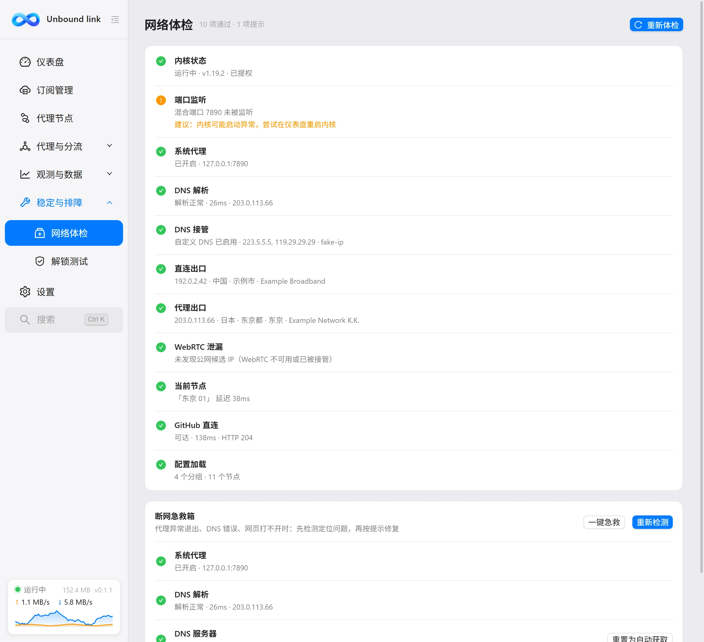
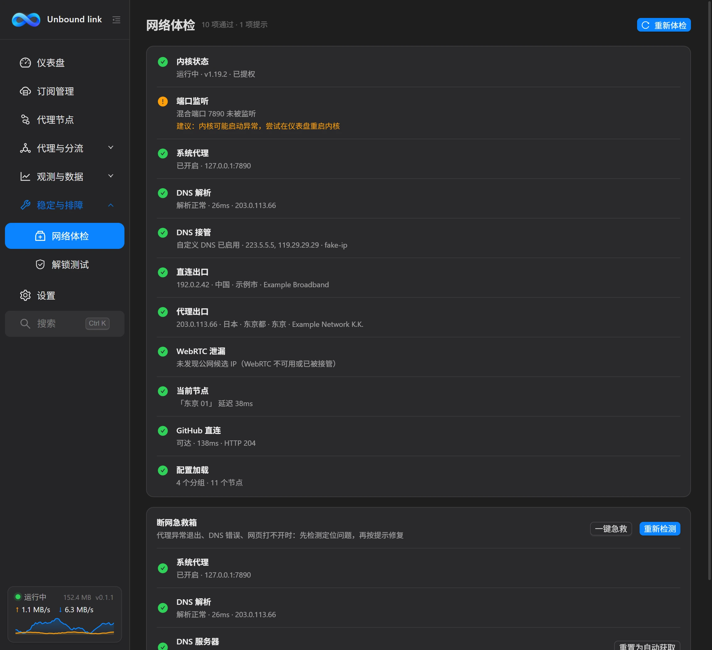

使用手册
网络体检
网络体检会一次性检查内核、端口、系统代理、DNS、出口与泄漏等环节，逐项给出结论与建议，并配有断网急救箱。


这一页解决什么
当「网页打不开」「代理没效果」时，不必靠猜。进入本页会自动开始检查，完成后页头给出汇总，例如「11 项通过」「N 项提示」「N 项异常」，让你先看清问题的规模。右上角有「重新体检」按钮，检测过程中它会显示「检测中…」。体检只做检查，不会自动改动系统设置，要不要修复、修复哪一项，都由你决定。
自动体检的 11 项
体检共 11 项，每项都会给出结论，异常项还会显示「建议：…」，直接告诉你下一步怎么做。
| 检查项 | 看什么 |
|---|---|
| 内核状态 | 内核是否运行、版本，以及是否已提权。 |
| 端口监听 | 混合端口 / 控制端口是否被其他程序占用。 |
| 系统代理 | 是否已开启系统代理，并指向本机混合端口。 |
| DNS 解析 | 解析耗时，以及使用的 DNS 地址。 |
| DNS 接管 | TUN 模式下是否接管系统 DNS 解析。 |
| 直连出口 | 探测直连时的出口 IP。 |
| 代理出口 | 探测走代理时的出口 IP；若与直连出口相同，会提示出口 IP 与直连相同。 |
| WebRTC 泄漏 | 检查是否存在公网候选 IP，可能泄漏真实 IP 时给出告警。 |
| 当前节点 | 当前节点的延迟；不可达时建议「在代理节点页挑选一个可用节点」。 |
| GitHub 直连 | 直连可达性与耗时、HTTP 状态码。 |
| 配置加载 | 分组数与节点数。 |
断网急救箱
页面下方是「断网急救箱」区域，说明文字为「代理异常退出、DNS 错误、网页打不开时：先检测定位问题，再按提示修复」。区域内有「一键急救」与「开始检测 / 重新检测」两个按钮。
一键急救等于一次性完成两件事：重置系统代理，加上刷新 DNS 缓存。这两项都不需要管理员权限，点击后立即生效，适合绝大多数临时断网场景。开始检测 / 重新检测则用于单独运行断网专项检测。建议先检测定位问题，再决定是否使用「一键急救」。
断网专项检测
专项检测会检查 5 类问题，每类给出对应的修复按钮：
| 问题 | 表现 | 修复按钮 |
|---|---|---|
| 系统代理残留 | 代理仍指向 127.0.0.1:7890，但内核未运行。 | 重置系统代理 |
| DNS 解析失败 | 域名无法解析。 | 刷新 DNS 缓存（ipconfig /flushdns，无需管理员） |
| DNS 服务器异常 | 网卡被设为 0.0.0.0 这类无效地址。 | 重置 DNS 服务器 / 重置为自动获取（需管理员） |
| hosts 文件异常 | 存在自定义条目，或文件缺失。 | 恢复 hosts 文件（先备份现有内容再重置为默认，需管理员） |
| 直连网络不通 | 不走代理也上不了网。 | 重置网络协议栈（重置 winsock 与 TCP/IP，需管理员，重启电脑后生效） |
权限与确认
需要管理员权限的修复会弹出 UAC 提权确认，同意后才会执行。执行危险操作前，界面会二次确认，确认按钮为红色的「执行」，请看清提示再点。修复完成后，页面会自动重新检测，刷新结论。
排错顺序建议
先看体检的前 4 项——内核 / 端口 / 系统代理 / DNS 解析。这几项通过后，再看出口与泄漏项，能把范围一步步缩小。